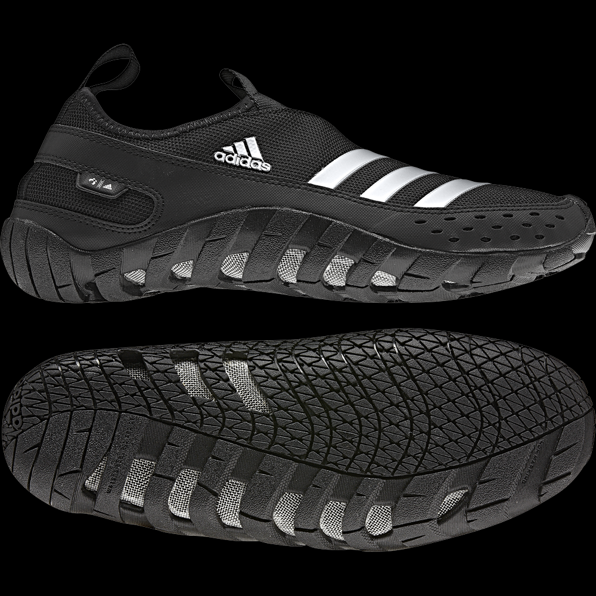

Кроссовки Adidas Jawpaw

Коралловые тапочки Jawpaw II
Кроссовки Jawpaw II обеспечивают отличную циркуляцию воздуха, поддержку, быстро сохнут, защищают чувствительную зону пальцев и обеспечивают хорошее сцепление с мокрой и скользкой поверхностью. Средняя часть подошвы максимально отводит воду.
Совет: Покупать нужно на размер больше, это факт.
Отзывы
На днях мне доставили эти кросовки в веселом цвете..как и хотел. Ношу размер 40 поэтому заказывал 40.5...сели идеально за счет используемых материалов и дизайна. На ноге практически невесомы и что самое приятное- обдуваются как сверху так и в области подошвы за счет циркуляции воздуха со всех сторон.Они позицианируются как обувь для туризма..но могу сказать что проходив целый день по городу был приятно удивлен отсутствием тяжести в ногах под вечер)) Еще одним +ом является грязеотталкивающая подошва..отличное соотношение цены и качества)
Плюсы: хорошо сидит, стильно выглядит, легкие, хорошо вентилируемые; если приехал на речку, а там много ракушек ( или камней), можно смело их надевать и не беспокоиться, что порежешься.
Минусы: в дождливую погоду не выйдешь, быстро промокают; если ходить по песку, то он быстро просачивается в сетку.
В общем, хорошие кроссовки со своими плюсами и минусами. Рекомендую!
Покупал 2 года назад, и они еще живы и даже ни где не прохудились и того хуже не делались) все прошли за эти годы( повседневное использование, на море, в машине, на велосипеде и тд)
многие говорят, что размер не подходит( у меня 28см(10), а подошел только 11 usa т.е аж на 2 размера больше) и то в первые дни было не удобно ходить, думал надо 12, но потом привык( они растянулись)
Очень удобные летом для пляжа велосипеда для активного отдыха!!!!!
Я уже третью пару донашиваю. Почти идеальная обувь для лета (по мне).